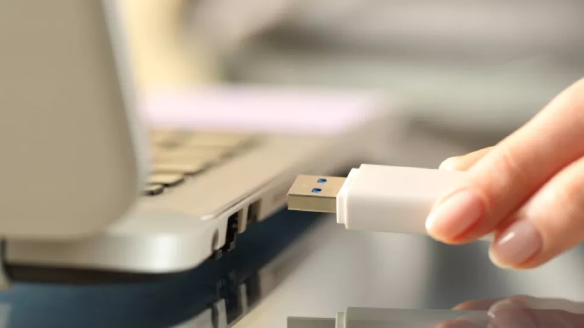

A computer cannot function without an operating system, so installing Windows 10 is a critical step that every non-Mac user should know how to do. Of course, most devices come pre-configured out of the box, which means Windows is preinstalled and you don’t need to worry about adding the OS manually. However, there are occasions when you might need to install Windows 10 yourself.
How to Install Windows 10
Step 1: Create USB installation media
Visit Microsoft's Windows 10 download page(opens in new tab) and select “Download tool now” under the “create Windows 10 installation media” section. Transfer the downloaded installer tool to a USB drive.
Step 2: Run the installer tool
Open the installer tool by clicking on it. Accept Microsoft’s terms, and then select “Create installation media for another PC” on the “What do you want to do?” page. After selecting which language you want Windows 10 to run in, and which edition you want as well (32-bit or 62-bit), you’ll be asked what type of media you want to use. Installing from a USB drive is definitely the preferred option but you can also install from a CD or ISO file. Once you choose your device, the installer tool will download the required files and put them onto your drive.
Step 3: Use your installation media
Insert your installation media into your device and then access the computer’s BIOS or UEFI. These are the systems that allow you to control your computer’s core hardware. The process of accessing these systems is unique to each device, but the manufacturer’s website should be able to give you a helping hand here. Generally, you'll need to press the F2, F12 or Delete keys as your computer boots up.
Step 4: Change your computer's boot order
Once you have access to your computer’s BIOS/UEFI you’ll need to locate the settings for boot order. You need the Windows 10 installation tool to be higher up on the list than the device’s current current boot drive: this is the SSD or HDD that your existing OS is stored on. You should move the drive with the installer files to the very top of the boot order menu. Now, when you restart your device the Windows 10 installer should load up first.
Step 5: Restart your device.
Save your settings in the BIOS/UEFI and reboot your device.
Step 6: Complete the installation.
Your device should now load up the Windows 10 installation tool on restart. This will guide you through the rest of the installation process.